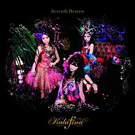
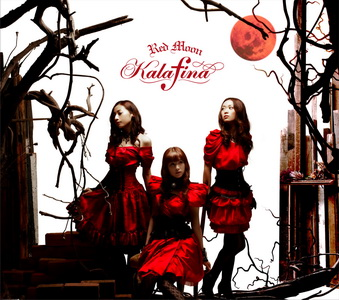
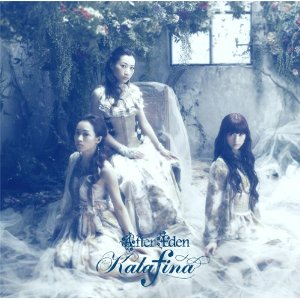

Blu-Rays and DVDs


Poll
Which is your favorite album from
Yuki Kajiura?
I have a dream
See-Saw
Early Best
Dream Field
melody
everything
Destination
Circus
Everlasting Songs
Seventh Heaven
Red Moon
After Eden
Consolation
Elemental
far on the water
Discography
Albums
Seventh Heaven
1. overture (instrumental)
2. oblivious
3. love come down
4. Natsu no Ringo
5. fairytale
6. ARIA
7. Mata Kazze ga Tsuyokku natta
8. Kizuato
9. Serenato
10. Ongaku
11. Ashita no Keshiki
12. Sprinter
13. Kimi ga Hikari ni Kaete yuku
14. Seventh Heaven
Red Moon
1. Red Moon
2. Hikari no Senritsu
3. Te to Te to Me to Me
4. Fantasia
5. Haru wa KKogane no Yume no Naka
6. Kyrie
7. Yama no Uta
8. Hoshi no Utai
9. storia
10. intermezzo
11. progressive
12. Lacrimosa
13. I have a dream
After Eden
1. Eden
2. Sandpiper
3. Magia
4. Kugatsu
5. In Your Eyes
6. Destination Unknown
7. Neverending
8. Kotonoha
9. Magnolia
10. Kagayaki Sora no Shijima ni wa
11. Mune no Yukue
12. Snow Falling
13. Symphonia
Red Moon
1. al fine
2. Consolation
3. moonfesta
4. Door
5. Mirai
6. Hanataba
7. Signal
8. Obbligato
9. Kiichigo no Shigemi ni
10. Manten
11. to the beginning
12. Hikari Furu
13. Yume no Daichi
far on the water
1. into the water
2. monochrome
3. Gogatsu no Mahou
4. ring your bell
5. Usumurasaki
6. identify
7. Hokage
8. One Light
9. Musunde Hiraku
10. heavenly blue
11. Sora-iro no Isu
12. believe
13. far on the water
Live Concerts Schedule
Kalafina Acoustic Tour 2017 + ONE with Strings
December 13, 2017
Nagoya, Japan
@ Aichi Prefectural Art Theater
December 14, 2017
Fukuoka, Japan
Fukuoka Symphony Hall
Kalafina with Strings Christmas LIVE 2017
December 19, 2017
Osaka, Japan
The Symphony Hall
December 20, 2017
Osaka, Japan
The Symphony Hall
December 22, 2017
Tokyo, Japan
Bunkamura Orchard Hall
December 23, 2017
Tokyo, Japan
Bunkamura Orchard Hall
Kalafina 10th Anniversary LIVE 2018
January 23, 2018
Tokyo, Japan
Nippon Budokan